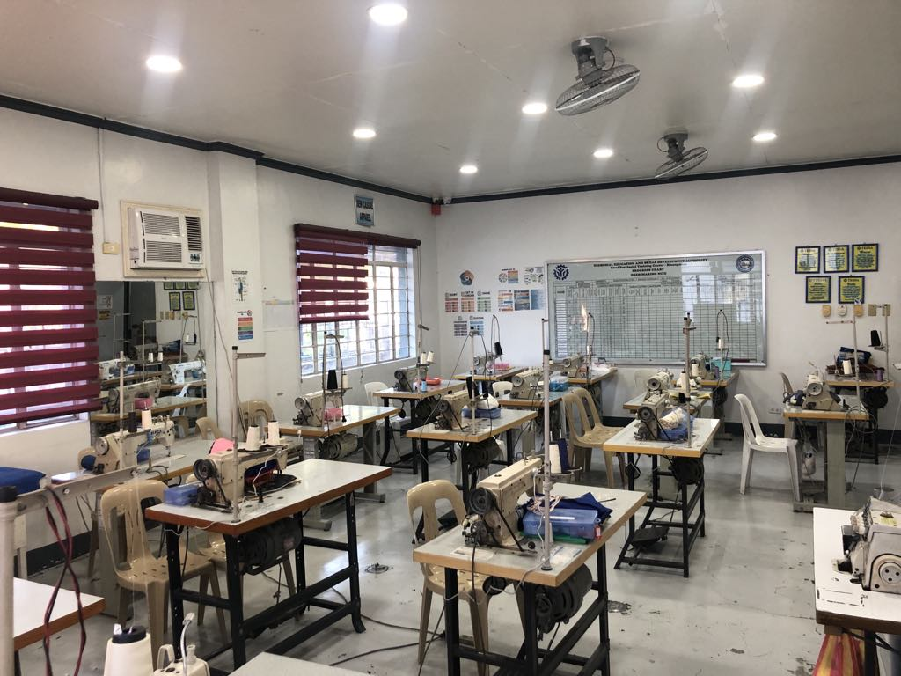
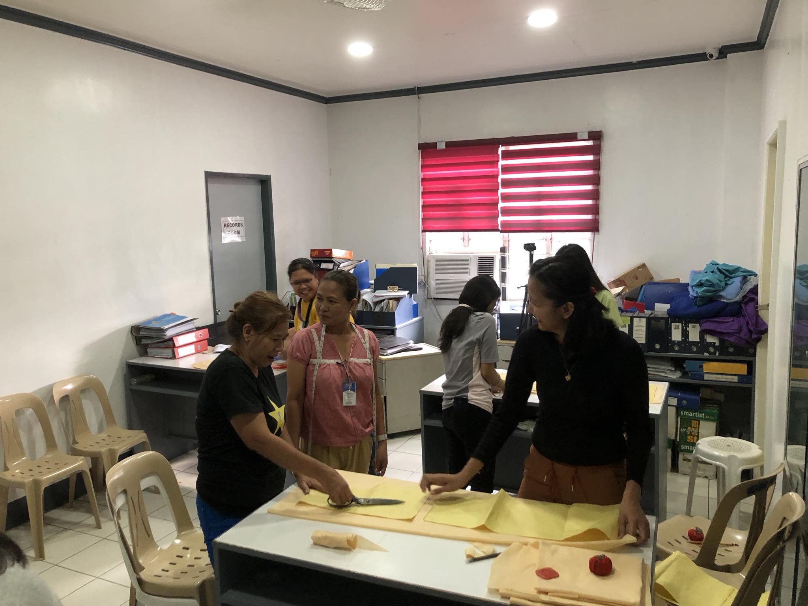
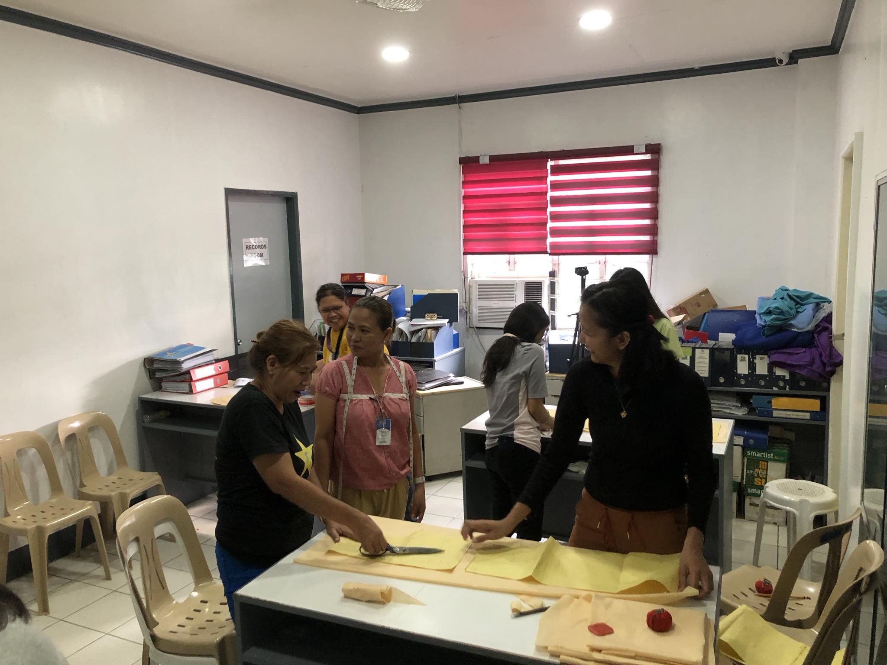
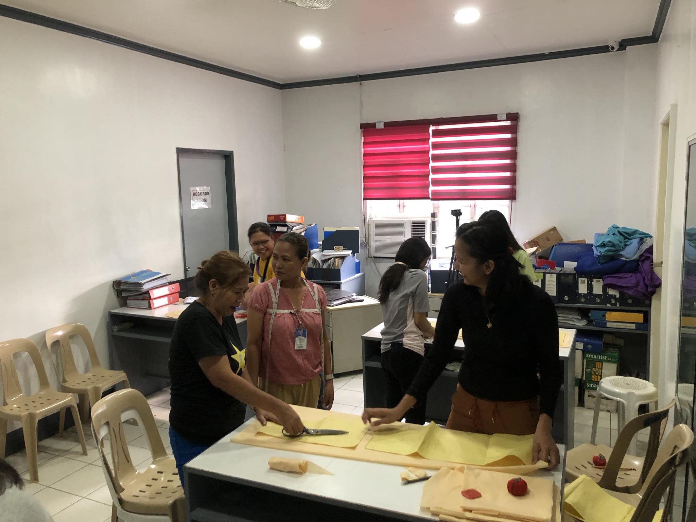

Dressmaking NC II
Description
This course covers the principles and techniques of dressmaking, including pattern drafting, garment construction, fitting, and finishing. Students learn to interpret and modify patterns, select appropriate fabrics, and use sewing machines and other equipment effectively. Topics may include basic sewing stitches, garment assembly techniques, garment alterations, and garment embellishment.
Duration
275 hours
COC - pattern making
COC - Sewing


 



×